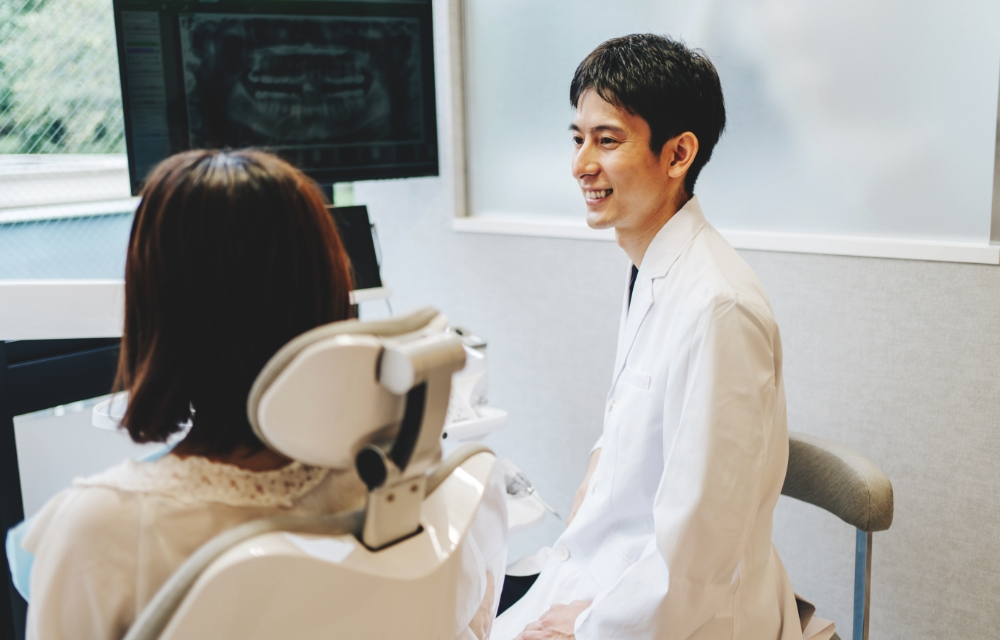
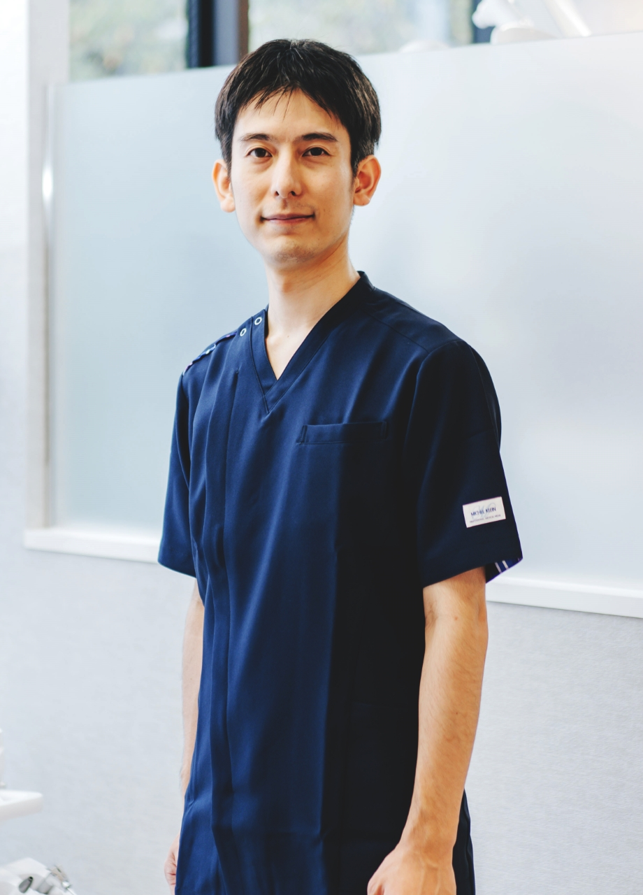
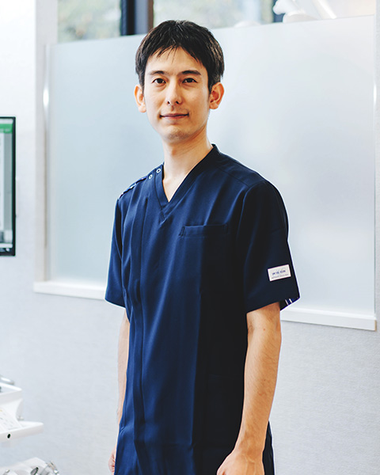
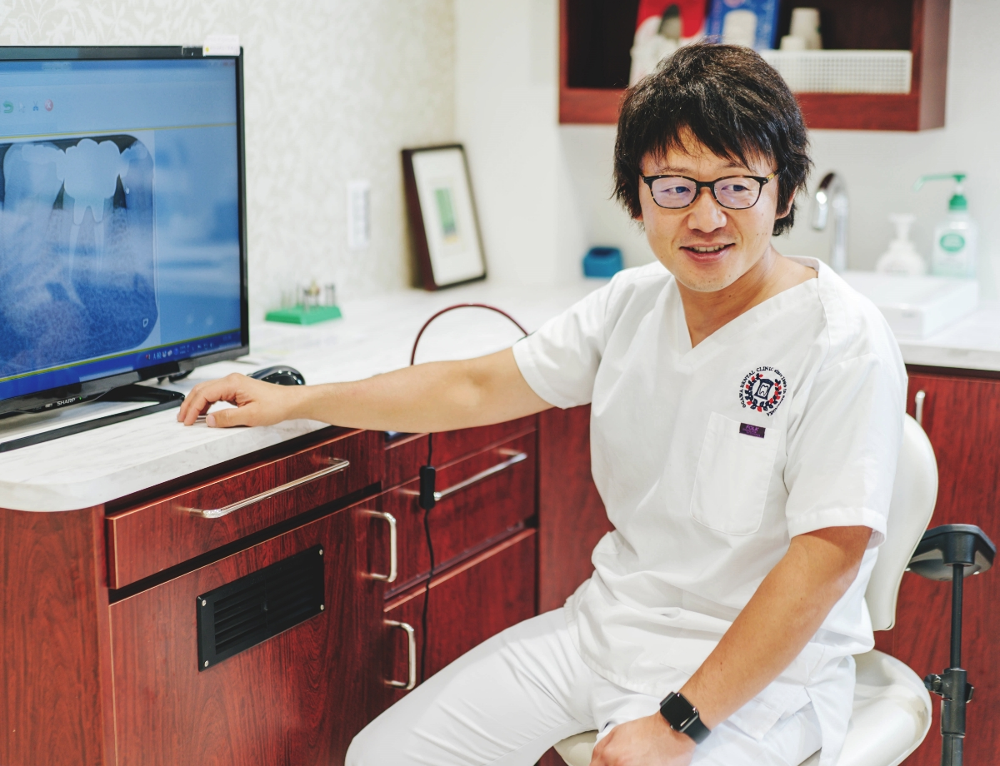
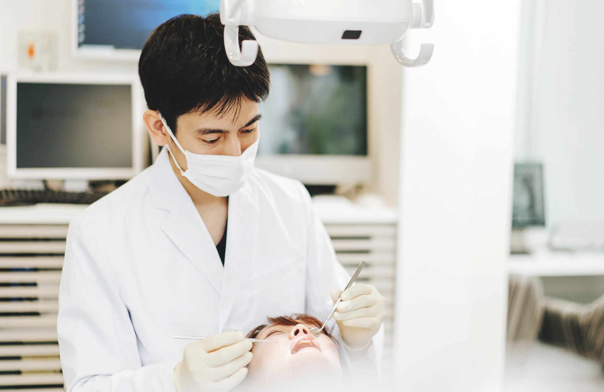

診療の先にある
あなたの未来の幸せを
お聞かせください
Please tell us about your future happiness
beyond the medical treatment
Please tell us about your future happiness
beyond the medical treatment

「虫歯や歯周病が治った」「歯並びや前歯が綺麗になった」「噛み合わせが整った」など、口腔を整えることは口もとの健康や見た目だけではなく、全身の健康にも影響を与えます。さらには、歯科診療を行うことで、自身をもって笑えるようになったり、前向きになれたりと心の豊かさにもつながると考えています。

日本口腔外科学会
口腔外科 認定医
院長生野 誠Ikuno Makoto
痛みや不便を感じていないときには、普段の配慮において優先度の低くなりがちな口腔内環境。しかし「お口」は、人とつながっていくためのもっとも重要なコミュニケーションツールです。言葉を紡ぐ以外の“表現”によっても自分らしさを大きく表すことができるため、あなたの印象を決定づけるパーツと言っても過言ではないでしょう。
池袋の歯医者「グランドメゾンデンタルクリニック」では、そんなお口の大切さを皆さまにお伝えし、理解していただきたいと思っています。今だけではなく、その先の未来の健康を考えるきっかけにしていただければ幸いです。
お口は患者さま自身で確認することが難しいため、何をされるのか不安に思う方も多いでしょう。当院では、そういった患者さまの不安を払拭するために、ご自身の口腔内が今「どんな状態」で、「どんな治療」を必要としているか、そして「どのくらいの期間や費用がかかるのか」をしっかりとご説明し、理解していただくことを大切にしています。
私たちが診療を行うのは「人の体」であるため、十分に準備をしたとしても、何かしらのリスクが伴います。そういったこともきちんとご説明し、患者さまが納得し安心していただいた上で治療に臨むことが、医療従事者としての誠実な対応であると確信しています。

「自信をもって笑いたい」「人とのコミュニケ―ションを楽しみたい」「いつまでも自分の歯で食事をとりたい」。理想的でもあり当たり前と考えているこの「未来」を実現するためには、口腔内の健康を整えることが一番の近道なのです。
当院では、今ある症状だけを治すのではなく、その先の未来を考え根本的な原因を解決した診療をご提供しています。その為に、お口全体を1口腔単位と考え、お口全体を診た診療を行っています。
「痛くなった歯を治療する」と考えるか、「未来を見据えた口腔治療」を行うか。この選択は、その後の人生に直接的に影響します。一緒に、口腔環境から未来を考えていきませんか？

Stance-01
事前の検査・診査診断の徹底で
口腔内をしっかりと把握
口腔内の状態をしっかりと把握するための検査と診査診断は非常に大切にしている工程です。検査では、レントゲン・口腔内写真・歯周病検査・CT撮影・唾液検査などを行い、お口のなかをすみずみまで調べます。
この結果をもとに、患者さまのご要望、そして未来のイメージをすり合わせていき、適切な治療方法をご提案。現在の状態～未来の理想までのプロセスを綿密に計画し、患者さまと一緒に進めていきます。
Stance-02
大学病院で得た知識と技術
そして絶え間ない研鑽
当院の院長は、慶應義塾大学にて広い分野での基礎を身につけ、歯科医師としての土壌を築きました。指導医や技工士、そしてさまざまな教授・講師陣のもと実習を経験。その他口腔外科、外傷処置、顎関節、麻酔、筋ジストロフィー・HIV・結核の患者さまの口腔管理など、さまざまな領域にて研鑽してまいりました。
当院開業までに、病院歯科のあり方、医科歯科連携の大切さ、そして患者さまのご家族・背景などとの関わり方も考えてきました。今後も、医療はどんどん進化します。現状に満足せず、治療のクオリティをさらに上げるべくこれからも日々勉強を続けてまいります。
患者さまの理想と安心を叶える
充実な設備
患者さまの理想をより確実に叶えるためには、高い技術を備えるのはもちろん、精密な検査・治療を行うための設備が必須です。当院では、そのなかでも選りすぐった設備を導入しております。
たとえば、撮影範囲の広い「KaVo（カボ）」のCT、明るくよく見えるマイクロスコープ、ダイキンの高機能換気設備「ベンティエール（換気のできるエアコン）」。酸素水で衛生的な「デンツプライシロナ」のユニットはプロによるメインテナンスが行われ、ニッケルチタン製のやわらかいファイル（治療器具）によって、患者さんそれぞれの根の形に沿って治療を行うことが可能です。これからも適切な診療の提供のため、継続的な設備の導入を行っていきます。
患者さまとスタッフの
幸せな未来を作る
歯科医院を目指して
「幸せな未来に生きたい」漠然とであっても、誰もがそう願っているはずです。私たちは、“歯科”という領域で、そのお手伝いをしていきたいと思っています。歯科は、未来の健康と幸せを支える「基礎」と言えます。みんなが未来の自分を想像し、それに向かって今できることをお手伝いするための設備・環境・対応を、日々向上させていくよう努めております。
関わってくださった一人ひとりに「ここへ来て良かった」と思っていただけたら、本当に光栄なことです。それはスタッフに対しても同じです。患者さま・スタッフ・地域の皆さまの幸せに関与していける医院にしていくために、これからも精進してまいります。